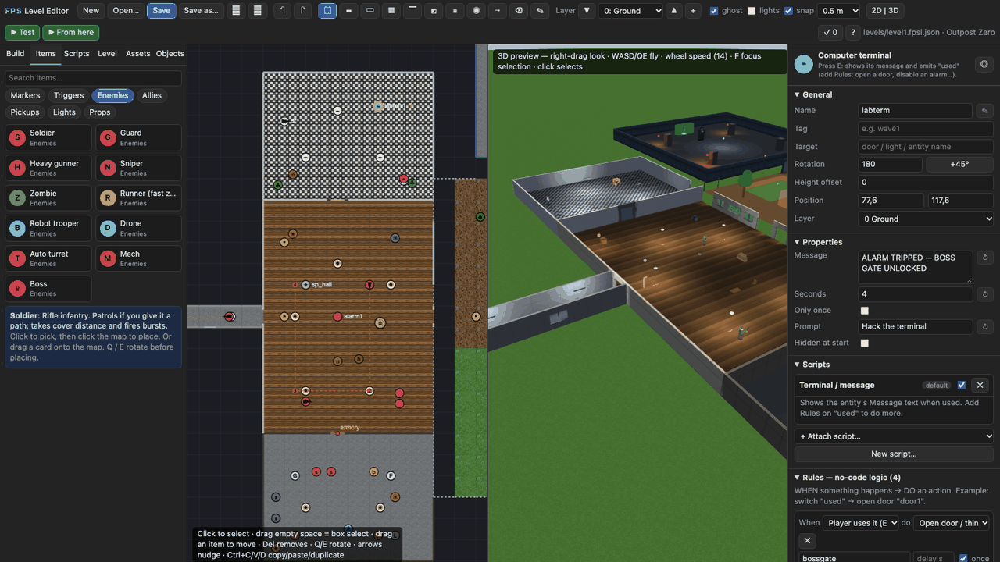
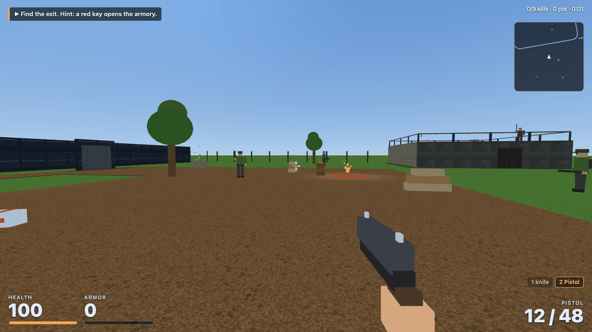
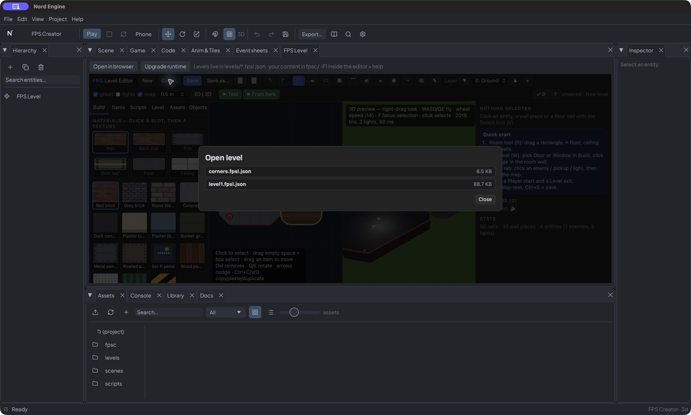
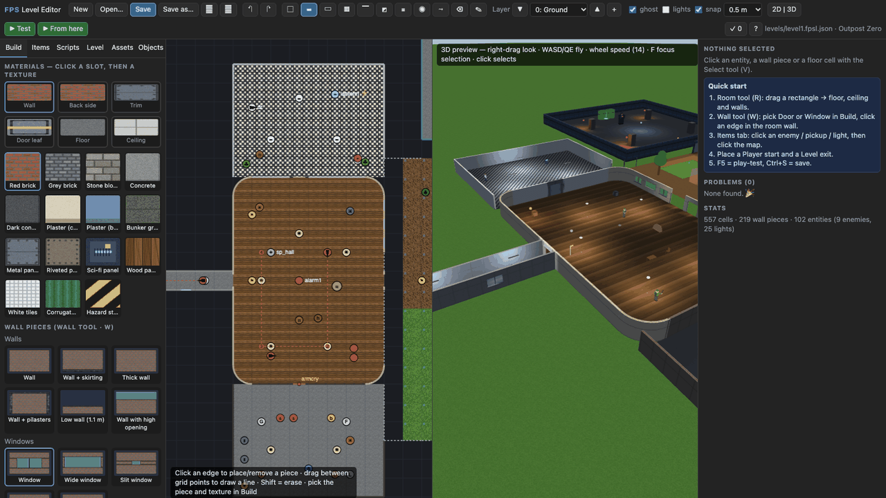
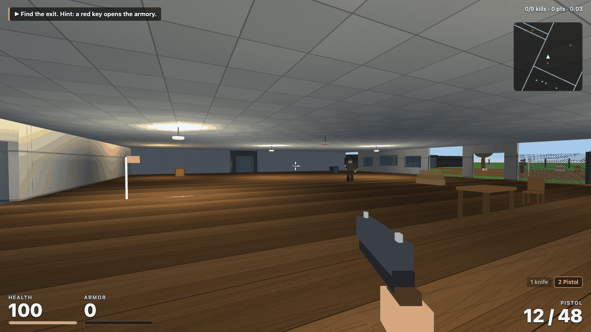
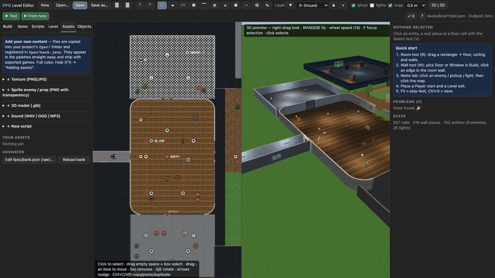
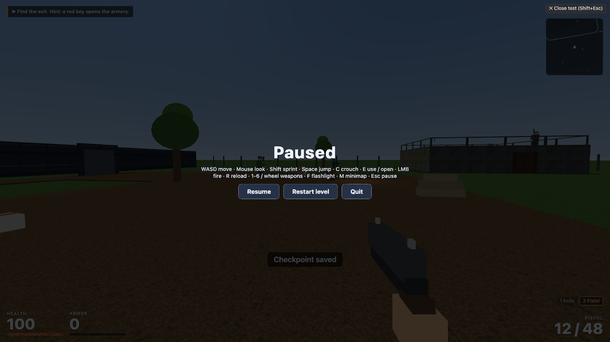
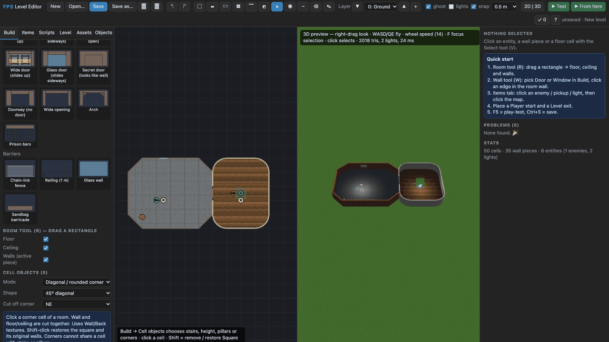
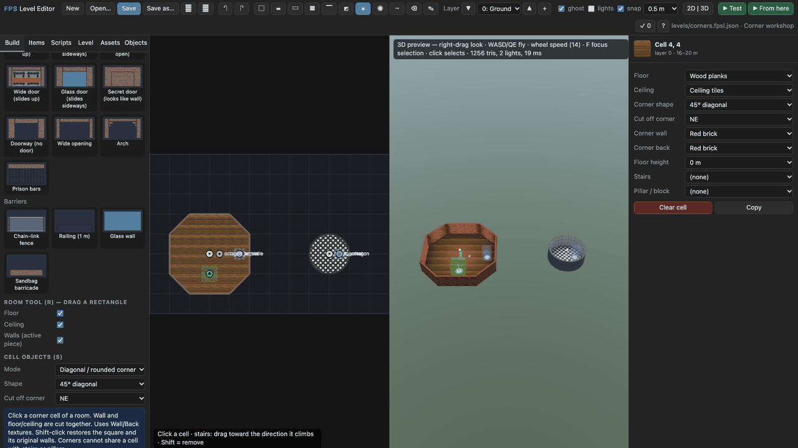
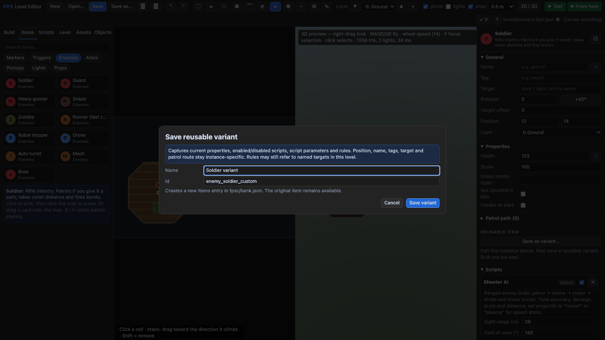

FPS Creator — build first-person levels
FPS Creator is an addon for Nord that turns the editor into a level editor on steroids for first-person shooters (and adventures): you draw rooms on a grid, drop in doors, windows, lights, enemies and pickups, attach scripts, press F5 and play. It is inspired by the classic FPS Creator workflow, but everything is original and works offline. Nothing in the normal editor changes — you opt in per project.

Start in one minute#
- On the project hub choose New project ▸ FPS Creator (level editor) — or open any 3D project and click Project ▸ Add / upgrade FPS Creator… (or the button in the FPS Level tab).
- Open the FPS Level tab, click Open…, then level1.fpsl.json. This opens the demo Outpost Zero: a bunker, hall, armory behind a red-key door, a lab terminal, a courtyard, a tower with stairs and a boss arena.
- Press F5. Click the game to capture the mouse. WASD, mouse, E to use things, F flashlight, 1–6 weapons.
- Stop the test with Shift+Esc, Esc → Quit, or the top-right Close test button. Save the level before checking it with the normal editor’s ▶ Play button.

Open, edit and switch level files#
Edit levels/level1.fpsl.json in the FPS Level tab. It contains rooms, wall shapes, floors, enemies, lights and rules. The normal Scene tab edits scenes/main.scene.json, which hosts the FPS runtime and chooses which saved FPS level the game loads.
| File | Where to edit it | Purpose |
|---|---|---|
levels/level1.fpsl.json |
FPS Level → Open… → level1.fpsl.json | Outpost Zero: the template's playable starting map |
levels/corners.fpsl.json |
FPS Level → Open… → corners.fpsl.json | Diagonal and circular room workshop |
levels/hotel.fpsl.json |
FPS Level → Open… → hotel.fpsl.json | Three-storey hotel: basement, lobby, guest floor, stairs, black-framed glass door |
levels/my_level.fpsl.json |
FPS Level → Save as… to create it, then Open… | Your own reusable level file |
scenes/main.scene.json |
Normal Scene tab and its Inspector | FPS Level host entity and its Level file setting |
Edit the map that main Play currently runs#
- Stop main Play if it is running. Click the FPS Level tab.
- Click Open… in the FPS editor's own top bar (beside New).
- Click level1.fpsl.json. The picker lists
.fpsl.jsonfiles directly inside this project'slevels/folder. Opening a different project gives you that project's files. - Draw walls, change corner shapes, move items or adjust Inspector properties. The top bar shows the open file path; unsaved means this map has no file yet.
- Click the FPS editor's Save. F5 / Test checks your current edits, including unsaved ones. Stop Test with Shift+Esc.
- Press the normal editor's Play to check the saved game. With the template's original Level file setting, it loads the saved
levels/level1.fpsl.json.

Open a different map or make another one#
Use Open… → corners.fpsl.json to switch to the workshop. Save your current edits first; if prompted to discard changes, cancel and save if you want to keep them. New creates a small starter with diagonal and rounded rooms. Save as… writes it to a new path such as levels/my_level.fpsl.json; Save subsequently updates that file. To load a file from elsewhere on disk, use the top bar's Import button, then Save as… into levels/ so it appears in Open.
The FPS view can reopen its last-used map or show the unsaved starter. Opening a map does not change the game's starting level. Its top-bar path tells you exactly what you are editing.
Make main Play and export start in your new map#
- In FPS Level, save the map as, for example,
levels/my_level.fpsl.json. - Switch to the normal Scene tab. Open the game's start scene (
scenes/main.scene.jsonin the template) if necessary. - Select FPS Level in the normal Hierarchy. In its Inspector, find the attached
scripts/fpsc/level-script.jsscript and set Level file tolevels/my_level.fpsl.json(relative to the project folder). - Save the scene using the normal editor's Save control. The FPS map and the host scene are separate files, each with its own Save.
- Press main Play. Export uses this saved scene reference too. A Level exit can use another saved level's project-relative path to continue to it.
If Test and main Play show different maps, compare the FPS top-bar path against the scene script's Level file, and save both. Test runs the open in-memory map; main Play runs the saved start scene and its referenced map.
Mouse capture in the native editor#
Launch the updated editor with ./run.sh, start Play or FPS Test, then click Click to play inside the game. Mouse look captures the pointer. Esc releases it and pauses; Resume captures it again. In FPS Test, Shift+Esc closes the test; main Play uses the normal Stop button. The 3D building preview uses right-drag to look and does not capture the pointer.
macOS builds include the native WebKit pointer-lock permission handler. Restart an already-running editor after updating Nord so it uses the rebuilt native code. The right-drag fallback remains for hosts that cannot provide pointer lock.
The editor window#
- Top bar: file (New / Open / Save / Save as / download / import), undo/redo, tools, the active layer (storey), 2D · split · 3D view, ▶ Test and ▶ From here, the ✓ problems checker and ? help.
- Left: Build (materials and wall pieces), Items (entities), Scripts, Level (sky, fog, ambient, intro, layers) Assets (add your own), and Objects (find things already placed).
- Centre: the 2D map and the live 3D preview. Wheel = zoom, middle/right-drag = pan,
Tab= cycle views. In 3D: right-drag to look, WASD/QE to fly, F to focus the selection, click to select. - Right: the Inspector for whatever is selected.
Drawing#
| Key | Tool | What it does |
|---|---|---|
R |
Room | Drag a rectangle: floor, ceiling and a wall ring |
W |
Wall | Click an edge between two cells, or drag between grid points. Choose Door, Window, Arch, Fence… in Build |
F C |
Floor / Ceiling | Paint cells (Ctrl = rectangle, Shift = erase) |
G |
Fill | Fill a closed region with the floor texture |
S |
Stairs · height · pillars | Click a cell; drag to aim the stairs |
A |
Add item | Click the map with the chosen item, or drag a card from Items |
P |
Path | Patrol route of the selected enemy |
V |
Select | Click, box-select, move, rotate (Q/E), copy/paste (Ctrl+C/V/D) |
X I |
Erase · eyedropper | Alt+click copies a texture or item |
Walls live on edges, so a door in a wall is one click. A piece (shape) and a texture are separate choices: any piece with any texture, and you can give the back side its own texture. Storeys: add a layer, build the upper room, put stairs on the lower layer and leave the cell above the stairs' top without a floor.

Navigation matches the Scene view: middle/right-drag or Space pans the 2D map, the wheel zooms about the cursor, Home fits the level, Shift+F frames the selected object (the 3D preview flies with the right mouse button and WASD, F focuses).
Ready-made things#
- Enemies: Soldier, Guard, Heavy gunner, Sniper (laser warning), Zombie, Runner, Robot trooper, flying Drone, Auto turret, Mech (rockets), Boss (3 phases, summons minions, health bar). They see, hear gunshots, open doors, find paths around walls and patrol routes you draw.
- Pickups: medkits, armor, four ammo types, five weapons, four key colours, coins and gems.
- Lights: lamps, neon, torches, fire barrels, a broken flickering light, an alarm light. Lights are baked — walls block them, so rooms really are dark next door.
- Props: barrels (some explode), breakable crates, tables, plants, trees, sandbags, a terminal, a wall switch and fire / smoke / steam / spark emitters.
- Markers & triggers: player start, checkpoint, level exit, teleporter, message zone, ambush trigger, hazard zone, sound emitter.
Doors, keys and switches#
Select a door piece. Give it a name (vault), tick a key colour to lock it, and untick Opens by itself if a switch should control it. Then:
- put the matching key pickup somewhere, or
- place a Wall switch, set its Target to
vault, or - give any entity a rule: When used → Open → vault.
Scripts: attach behaviour#
Every entity already has the right scripts (an enemy has a brain, a pickup gives something). In the Inspector ▸ Scripts:
- tune the parameters (damage, accuracy, speed, sight…), switch a script off or remove it;
- attach another one with + Attach script…, or drag a card from the Scripts tab onto an entity;
- write your own: Assets ▸ New script, or open a built-in script in the Scripts tab and Make an editable copy.
A script is a small JavaScript file:
export default {
id: 'hello', title: 'Hello', cat: 'Custom', desc: 'Says hello when used.',
params: { text: { type: 'string', label: 'Text', default: 'Hello!' } }, // becomes a form in the Inspector
use(c, by) { c.say(c.p.text, 2); c.emit('used'); }, // E pressed on it
update(c, dt) { /* every frame */ },
};Hooks: start update use hurt die event heard idle. c.self is the entity, c.p your parameters, c.player, c.game, plus c.say, c.sound, c.emit, c.on, c.after, c.find.
Rules: logic without code#
A rule reads when → do → target. Examples:
- Terminal — When used → Open → bossgate, When used → Emit → alarm, When used → Spawn → enemy_drone ×2.
- Trigger zone — When enters → Message → "They are coming!".
- Boss — When dies → Open → exit. The Level exit has a Needs event property (
warden.died) so it stays shut until then. Targets are entity names,#tags(groups) or door names. The ✓ checker warns about targets that do not exist.

Add your own assets#
Everything you add lives in your project's fpsc/ folder and works offline and in exports. Use the Assets tab:
- Texture — a seamless PNG/JPG; say how many metres one repeat covers. Every wall piece can use it.
- Sprite enemy/prop — a PNG with transparency (classic billboard look) that behaves like a built-in entity.
- 3D model — a
.glb(1 unit = 1 m, feet at the origin). - Sound — WAV/OGG/MP3; if the name matches a built-in (
pistol,door,pickup…) yours replaces it. - Script — from a template.

fpsc/ and registers them in bank.json.Power users edit fpsc/bank.json directly (new wall pieces, entities that extend built-ins, weapons). The full rules table is in Help (F1) and in docs/FPS_CREATOR.md.
Use scripts from FPS Creator (.fpi)#
If you own a copy of FPS Creator, you can reuse its ready-made behaviours (doors, lifts, switches, pickups, lights, trigger zones). They are plain-text .fpi files in its scriptbank folder; Nord runs them with a built-in interpreter. Nord does not include any FPS Creator files — you import from your own folder.
- Preview what will work (change the paths):
node tools/fpsc-import-fpi.mjs ~/Downloads/FPS-Creator/Files/scriptbank ~/MyGame --dry - Import for real (leave off
--dry). To take only a few scripts add--only door1,switch1,pickuphealth. - Reopen the FPS Level tab. The Scripts tab now has FPI categories. Drag, for example, Player Proximity Door (
fpi-door1) onto an entity, or use Attach in the Inspector. - In the Inspector set the script's parameters: the sounds (
$0,$1: type a Nord sound name such asdoororpickup), Pickup gives (for examplehealthand the amount) and the Target field (it replaces FPS Creator's IfUsed box, so a switch's Target is the door or light it controls).
About 80 of the 166 stock scripts work. The enemy-AI scripts (people, Dark AI) do not; fpsc/fpi/IMPORT_REPORT.md lists each skipped file and which built-in Nord enemy script to use instead. FPS Creator model animations are not imported, so a door script keeps its timing (set Animation time) but no model moves. Details: docs/FPS_CREATOR.md, "Importing FPS Creator scripts".
Test, Test from here, and the main Play button#
These are two different ways to run your work. FPS tests are for the level you are editing; the main editor plays the project through its configured start scene.
| Control | What it runs | Where you start | Default shortcut |
|---|---|---|---|
| ▶ Test | Current FPS level, including unsaved edits | Player Start marker | F5 |
| ▶ From here | Current FPS level, including unsaved edits | Selected object’s position; otherwise the cursor cell on the active storey | Shift+F5 |
| Main editor ▶ Play | Project start scene and its referenced saved level | Saved Player Start | Cmd/Ctrl+R on desktop |
From here prioritises a selected object. Clear the selection before using it to test from the cursor. If the level has no Player Start, ordinary Test also falls back to the selected position/cursor. Testing does not save your level or change the project’s start scene.
Stop a test and return to building#
- Shift+Esc closes an FPS test immediately, including while the game iframe has focus.
- Esc releases mouse capture and pauses. Click Quit to return to the level editor, or Resume to continue.
- The top-right ✕ Close test button always closes the test. Its label shows your current Stop test shortcut.
- Main-editor Play is stopped separately with ■ Stop, its Play toggle, or its configured Stop shortcut (desktop defaults Cmd/Ctrl+R and Cmd/Ctrl+Period). The browser build uses Alt for the main Play/Stop shortcuts.

Change shortcuts in the whole editor#
- Open Settings from the main editor menu (Cmd/Ctrl+,).
- Find FPS Level: Test, FPS Level: Test from here, and FPS Level: Stop test. Enter a key such as
F6orF8, then choose Shift, Cmd/Ctrl, and Alt modifiers as wanted. Enter the key alone; use the modifier checkboxes instead of typingShift+F6. - Choose different combinations. A configured FPS test binding takes precedence over an FPS tool binding. Stop test takes priority when bindings are duplicated. An invalid key falls back to that action’s default.
- Close Settings to save. The embedded FPS page updates without reloading or discarding unsaved level edits. Its test-button tooltips and Close test label show the active bindings. An already-open test receives the new Stop binding.
- Reset shortcuts to defaults restores the main editor’s Run/Stop and the three FPS bindings. Your theme, layout and other settings stay as they were. Reset all settings to defaults is the broader reset.
The Open in browser button passes the current FPS bindings to that browser page when opening it. An already-open separate browser page keeps that snapshot; reopen it to pick up later changes. A page opened directly through nord serve uses F5, Shift+F5 and Shift+Esc. The three configurable bindings are editor commands, not exported-game control settings; WASD, firing and Esc-to-pause are unchanged. Start shortcuts do not fire while you type in a field.
Save, run the project, export and upgrade#
- Click Save in FPS Level (Cmd/Ctrl+S). For a new level choose a project path such as
levels/my_outpost.fpsl.json; Save as creates a different level file. Download/import let you move a JSON level between projects, but custom assets must travel with it. - Return to the normal scene editor. Select the entity with the FPS level script and set Level file to the exact saved path. Save that scene. Confirm that the project’s start scene is this scene if it should launch first.
- Click the main ▶ Play button. This checks the project route a player will use. If it shows an older/different map, check both the saved level path and the project start scene.
- An exit’s Next level path (or Level settings’ Next level) enables Next level after completion; save the destination too. Inventory is not a cross-level campaign system: test the destination’s own Player Start loadout.
- Export as usual —
scripts/,levels/andfpsc/are part of the project, so they ship automatically. - Upgrade after updating Nord: FPS Level ▸ Upgrade runtime (or
nord fpsc init). Your levels andfpsc/content are never overwritten.
Troubleshooting#
- Test will not close → press your Stop test shortcut (default Shift+Esc), use Esc → Quit, or click Close test. The main editor’s Stop button controls main Play, not this overlay.
- My new key does nothing → close Settings to save, click the map/game to focus it, check the key name and modifiers, and avoid duplicate bindings. Reopen a separate browser page from FPS Level after changing keys.
- From here starts in the wrong place → a selection overrides the cursor. Clear it and move the cursor to the desired cell/storey.
- Main Play shows old work → save the FPS level, then check the scene’s Level file and project start scene.
- Rooms are very dark → add lights, raise Level ▸ Ambient light, or choose a lighter floor texture.
- Enemy stands still → give it a path (
P) or check that its sight range reaches the player and that a wall is not in the way. - Door will not open → is it locked? Does the key exist? With Opens by itself off you need a switch, rule or
E. - "Unknown entity type" → a custom entity was removed from
fpsc/bank.json. - Console messages from play-testing appear in the editor's console (bottom of the map); errors name the script and hook.
Find objects and refine patrols#
Use the Objects tab to search placed entities by name, tag, type or script across every storey. Click a result to select it and centre the map; Shift-click toggles selection; double-click focuses the 3D preview. Choose Current storey to narrow the list.
The toolbar’s placement grid offers 0.25, 0.5, 1, 2 and 4 metres; the default stays 0.5 m. It applies to entity placement, dragging and drawn waypoints. Turn Snap off for free placement. Room cells and wall edges still use the 4 m building grid.
Select an enemy and expand Patrol path to edit each point’s X/Z and wait in seconds (default 0.8). The arrow buttons reorder points; + inserts a midpoint after one; × removes it; Reverse route reverses the order. Drawing with P and Shift-click removal still work. Every route edit supports undo/redo and saves with your level.

Build a complete small level#
Follow T27: Build your first FPS level for a room-by-room exercise, then use this checklist:
- Geometry: two connected rooms, a door, floors and ceilings; no accidental holes. The 4 m building grid is separate from the adjustable object-placement grid. Use 0.25–0.5 m for furniture and 1–4 m for coarse placement.
- Player route: place a Player Start facing the first door and a Level exit in the last room. Keep spawn points clear of walls and solid props. Run ✓ and fix missing starts, unknown types, duplicate names and broken targets.
- Lighting: put a lamp in each enclosed room. In Level choose sky, fog and ambient light. Static lights bake at build/test time; named or scripted lights can change during play, but do not cast dynamic shadows.
- Challenge: place one guard, then select it through Objects. Draw a short path with P. Adjust coordinates and waits in Patrol path; use arrows to choose the walking order. The route loops. Add a checkpoint before a harder fight and a medkit afterward.
- Objective: add an exit and optionally gate it on a named event such as
warden.died. Give the enemy that exact name. A name addresses one object;#tagaddresses a group. Check rule targets with ✓. - Storeys: PageUp/PageDown changes the active storey. Put stairs on the lower storey, aim their climb direction and leave the upper cell above the top open. Test the ascent and descent from both ends.
- Iteration: Test from Player Start to check the whole route. Use From here near a changed room for quick checks. Stop, undo/redo edits, and save when the result works.
- Delivery: verify main-editor Play, export to a normal web folder, and check the exported copy. Keep
levels/,fpsc/and installedscripts/fpsc/together. Custom dynamic scripts require the normal folder export rather than bundled single-file export.
Where your work lives#
| Folder/file | Purpose | When to edit it |
|---|---|---|
levels/*.fpsl.json |
Geometry, entities, patrol routes, scripts, rules and level settings | FPS Level Save/Open; plain JSON also works |
fpsc/bank.json |
Registers project textures, entities, models, sounds, weapons and custom scripts | Assets tab or careful manual edits |
fpsc/textures, art, models, sounds, scripts |
Your custom content | Add through Assets; keep with the project |
scripts/fpsc/ |
Installed engine runtime | Upgrade through Nord; put personal changes in fpsc/ |
| Scene with the FPS level script | Connects a saved level to the project | Normal scene editor, Level file attribute |
Browser recovery stores a temporary unsaved backup; it is not a substitute for saving your project folder. Checkpoints restore the player during the current page session; they are not a complete mid-level save of enemies and world state.
Limits to plan around#
The current addon uses keyboard/mouse controls, procedural characters and weapons, grid collision and baked static light. Touch/gamepad, animated skinned glTF characters, moving platforms, dynamic shadow casting and exact world-state saves are not implemented. Embedded pointer lock and feel still need native WKWebView/WebView2 testing; if capture is unavailable, the game offers hold-right-mouse look. Use the external browser option when comparing behaviour.
Next: FPS Level quick reference · First FPS level tutorial.
Diagonal, rounded and circular rooms#
The editor's New starter now shows both shapes immediately: a room with four diagonal corners and a second room with four rounded corners. In Outpost Zero (the FPS template/main example), the starting bunker has diagonal corners and the main hall has rounded corners. Their original doors, window, enemies, pickups, exits and mission routes remain available. Existing saved levels are not rewritten: click New for the updated starter, or open the refreshed built-in example/new template project.

Upgrade existing projects first: click FPS Level → Upgrade runtime before using the new shapes through main Play or an export. FPS Test reads the current engine code; the project uses its own installed runtime copy.
- Draw a rectangular room with R as before.
- In Build → Cell objects → Mode, choose Diagonal / rounded corner. Select 45° diagonal or Rounded quarter-circle, then the corner to cut off: NE, NW, SE or SW (north is up on the map).
- Click the corresponding corner cell of the room. The wall, floor and ceiling change together; the floor does not stick out beyond the wall. It uses your current Wall/Back materials and retains the cell's floor/ceiling textures and height.
- Repeat at the other room corners. Four diagonal cuts give an octagonal room. Rounded cuts give rounded room corners. Four rounded cells in a 2×2 room form a circular room.
- Select a cell with V to change Corner shape, direction, Corner wall or Corner back in the Inspector. Shift-click with the corner tool restores Square. The original two boundary walls are retained internally and reappear; undo/redo works too.
- Test the full route and From here. Place starts, exits, enemies and patrol points inside the retained floor; the removed corner has no floor or ceiling.

levels/corners.fpsl.json in a new FPS Creator project to explore these editable examples. The rooms are linked by teleporters.The first version supports 45° cuts and a 4 m-radius quarter circle with eight segments, in four orientations. Walking, shots, sight/light occlusion and navigation use the same footprint. These are solid shaped walls: doors/windows remain on ordinary straight grid edges. Stairs and pillars need separate cells. Restore Square before adding them; the UI preserves existing stairs/pillars rather than replacing them. This does not add arbitrary-angle drawing or free-size curves.
Turn an edited item into a reusable variant#
Items contains the things you can place; Objects finds the things already placed. To customise an enemy or prop without changing every built-in item:
- Place it, select it, and edit Properties, Scripts and Rules. For example, place Soldier, set Health to 123, and set Shooter AI's damage to 2.
- Scroll to Reusable item → Save as variant…. Name it Gentle guard, use an unused id such as
gentle_guard, and click Save variant. Use a key-like id: lowercase letters, digits and underscores, starting with a letter. - Find Gentle guard in Items and place more. They inherit the Soldier model and behaviour plus the defaults you saved. The built-in Soldier remains unchanged.
- Later, select a Gentle guard, edit it and use Update variant defaults…. Confirm the update. New placements use the updated values; existing instances inherit property/script defaults where they have no override. Their own overrides and copied rules are kept.
- Save the level too. Variants are saved immediately to the project's
fpsc/bank.json; the level's placement/type changes have separate Save/undo history.

Variants capture properties, scripts (including enabled state and parameters) and rules. They do not copy world position, name, tags, the direct Target field or patrol coordinates. A rule can still point at a named door or entity: check its targets when reusing it in another level. A rule list is copied into each new placement; updating defaults does not rewrite all those lists. This is for individual FPS items, not entire room assemblies.
To change appearance, use an exposed model property or create a sprite/GLB entity in Assets, then save variants of it. Wall/corner textures remain directly editable in Build and the cell/piece Inspector. Saving variants requires a connected project server; bank definitions are not removed by undoing a level edit.
Aiming down the sights (right mouse button)#
Hold the right mouse button to aim: the gun moves to the screen centre, the view zooms slightly, spread and mouse sensitivity drop and the crosshair fades. Aiming is disabled while reloading or switching weapons, for melee weapons, and when mouse capture is unavailable (the "hold RMB to look" fallback).
Every weapon can have its own aim pose. In fpsc/bank.json add view.aim to the weapon (all fields optional):
"aim": { "pos": [0, -0.08, 0.5], "zoom": 0.8, "spread": 0.3, "sens": 0.7 }pos is the view-model position while aiming (x right, y up, z forward, relative to the camera) — nudge y until the sights line up with the crosshair. Without pos the weapon is centred automatically from its parts. zoom multiplies the field of view (smaller = closer), spread and sens multiply the bullet spread and the mouse-look speed.
Hotel Meridian: a three-storey example#
Open FPS Level → Open… → hotel.fpsl.json. It has a basement, a lobby floor and a guest floor joined by three staircases, plus the Hotel glass door (black frame) wall piece at the entrance: two glass leaves slide apart, the frame and handles are black (the piece's default trim texture is black_metal; pick another Trim texture in Build to recolour it).
Things to copy into your own levels:
- Layers are floors, 3.2 m apart. Layer 0 is the grass level and the basement; layer 1 stands on a plinth reached by the porch stairs.
- Stairs between floors: stair cell (
Stool) on the lower layer, a hole (ceiling, no floor) above it on the upper layer, and the landing in the next cell on the upper layer. - Make shafts safe: railings round the hole, a low wall at the stair's high end, and walls round the empty cell above it.
- Back texture: set Back texture so the street side is brick and the inside plaster.
- Objective chain: red key (boiler room) → locked Suite 204 → yellow key → basement service door → exit.